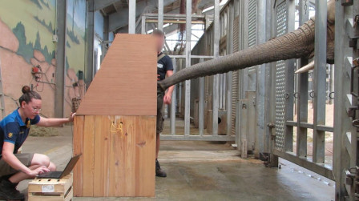
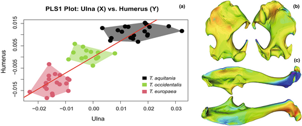

Recherche & enseignement
Éthologie, morphologie fonctionnelle et biomécanique, de la thèse aux salles de travaux pratiques.
Recherche

Doctorat mené au sein des unités ISYEB & MECADEV au Muséum National d'Histoire Naturelle. Encadrants : Emmanuelle Pouydebat & Raphaël Cornette. Projet interdisciplinaire combinant éthologie, morphologie fonctionnelle et bio-inspiration pour la robotique. Inclut des missions de terrain au ZooParc de Beauval et au Cambodge (Elephant Valley Project, 10/2024).

Stage au sein de l'unité ISYEB (CNRS/MNHN). Encadrants : Raphaël Cornette & Arnaud Delapré. Analyse comparative morpho-fonctionnelle de l'humérus et de l'ulna chez trois espèces de taupes d'Europe de l'Ouest, incluant la nouvelle espèce Talpa aquitania. Ce travail a abouti à une publication dans le Journal of Anatomy (2022).
Stage au sein du PZP & MECADEV (CNRS/MNHN). Encadrants : Emmanuelle Pouydebat & Luca Morino. Étude de l'utilisation fonctionnelle des nageoires chez les lamantins des Antilles. Ce stage a directement inspiré l'encadrement d'un stagiaire en 2022 sur la latéralité chez la même espèce.
Stage à la Ménagerie du Jardin des Plantes (CNRS/MNHN). Encadrante : Aude Bourgeois. Étude du bien-être des animaux en milieu zoologique. Premier contact avec le milieu de la recherche en éthologie appliquée et la gestion des populations en captivité.
Enseignement & encadrement
Encadrement de 2 groupes de Licence 3 sur 48h. Préparation et animation de séances de travaux pratiques en psychobiologie comparée. Adaptation du contenu au niveau des apprenants, évaluation des étudiants.
Encadrement de 4 groupes de Licence 1 sur 16h. Introduction à la systématique et à la diversité du monde du vivant. Première expérience d'enseignement en biologie fondamentale pour des étudiants de premier cycle.
Conception et suivi d'un projet individuel portant sur la latéralité chez les lamantins des Antilles au ZooParc de Beauval. Accompagnement, formation aux méthodes éthologiques, évaluation des compétences et bienveillance.
3 publications évaluées par les pairs en tant que première autrice et autrice correspondante.
Publications scientifiques
Maximum trunk tip force assessment related to trunk position and prehensile ‘fingers’ implication in African savannah elephants
PLOS ONE, 19(5), e0301529 · 2024
DOI : 10.1371/journal.pone.0301529Effect of the habitat and tusks on trunk grasping techniques in African savannah elephants
Ecology and Evolution, 14(4), e11317 · 2024
DOI : 10.1002/ece3.11317Comparative morphofunctional analysis of the humerus and ulna in three Western European moles species of the genus Talpa, including the newly described T. aquitania
Journal of Anatomy, 242(2), 257–276 · 2022
DOI : 10.1111/joa.13570Jeux de données
Conférences & séminaires
31 juillet 2023
International Congress of Vertebrate Morphology
Cairns, Australie
Lauréate bourse de voyage
Mai 2021 & avril 2024
Congrès des Jeunes Chercheur·e·s du Muséum
Paris
23 juin 2023
Workshop « Integrating elephants into more-than-human narratives »
Lyon
Sur invitation
23 novembre 2022
Journée Bioinspiration : du très petit au très ancien
Paris
Prix & distinctions
2026
Bourse couvrant les frais d'inscription — Training course AI for ecologists: a toolkit
2023